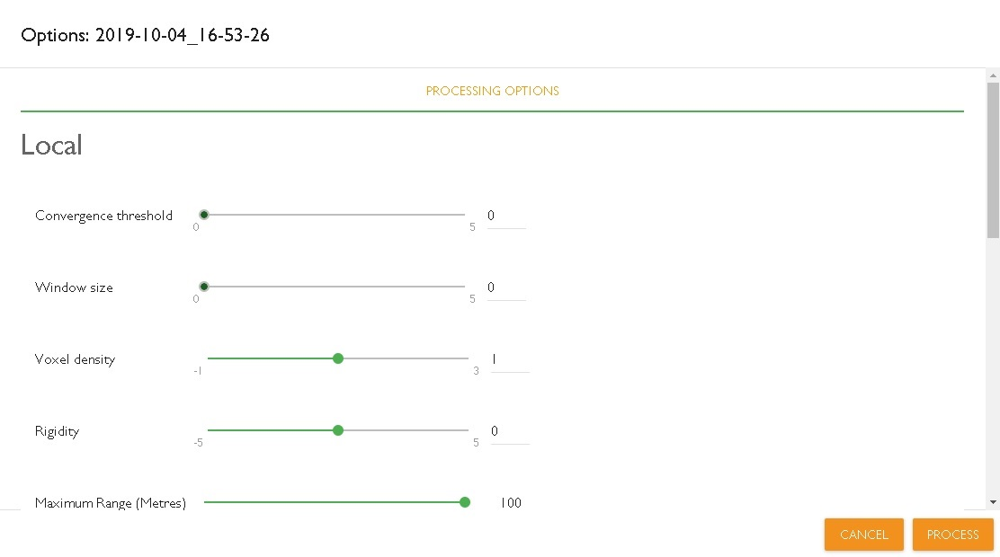
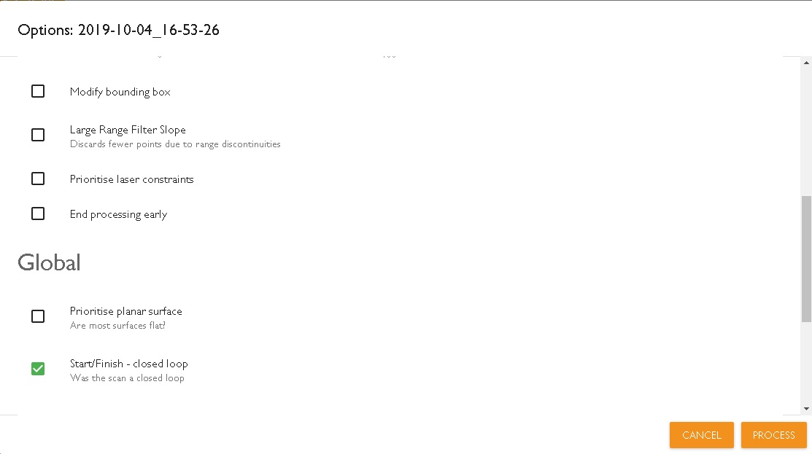
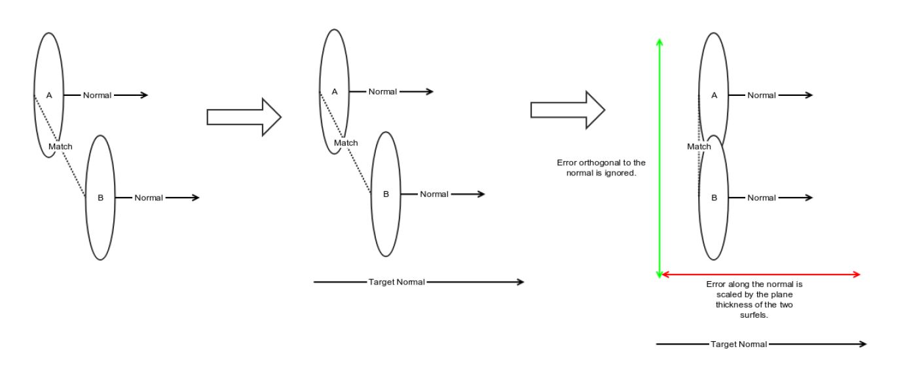
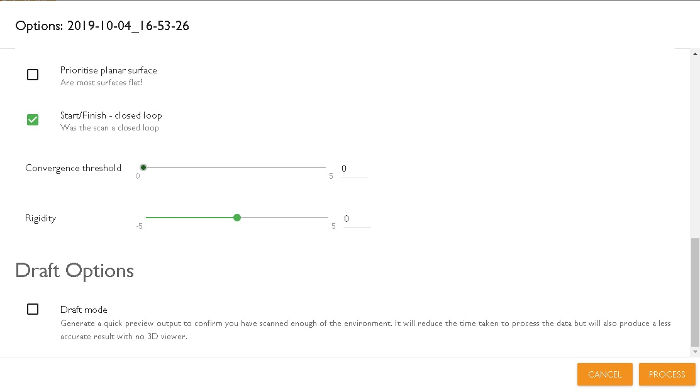

Process/Reprocess and adding the video data in 3D point cloud
Processing data-sets
To process your data-sets and see the 3D point cloud results, users will
need to download the raw data from the data logger in the usb stick and
copy it into the local machine. Subsequently, from the local machine the
raw data can dragged and dropped into HUB for processing them.
Note: The raw data should be copied in the local machine and then
drag and drop into HUB. Users may not be able to drag and drop data from
either the local network or the USB stick directly.
Reprocessing data-sets
Some times user may get incorrect output results by processing data-sets
with the default parameters. Reprocessing data-sets, may help to improve
or fix the geometry of the output results. This some times can be time
consuming as the reason may not be very clear for many cases. To find a
solution, users need to understand the parameters that have been set in
the User Interface and modifying them accordingly. Since the geometry of
each feature is different as well as the walking speed varies for each
scan, each case can have different solution for parameter changes. Below
is the description of each parameter.
Local Registration Options
- Convergence threshold: It is the “point” at which the algorithm
stops the process/iterations when it meets the default value i.e. when
the normalised residuals of the iterations is less than the default
value. Increasing this parameter increases the number of iterations
which subsequently reduces the threshold value.
- Window size: This parameter is a combination of 3
sub-parameters. It depends on the duration size of the window, the
duration of the window that will be shifted for each iteration during
the local phase and the duration of the previous surface element data
that is been used as a set of fixed view. This impacts directly on how
much each part of the trajectory will be optimised for the next
portion/part. It is effectively the accuracy against the time slider for
which increasing this value the algorithm will consider using bigger
samples of data during each processing step. Though increasing it will
require more memory otherwise it will end with an error message.
- Voxel Density: This parameter defines the size of the smaller
volume element that should be used to compute subsequently the surface
elements that the scanner has acquired. Increasing this parameter will
make the algorithm to consider smaller volume elements for the
computation and force more detail to be detected at close range.
However, depending on the environment and the requirement this can be
changed i.e. smaller values increase the mapping speed but not the
accuracy unfortunately.
- Rigidity: This parameter is related to noise removing
constraint by changing subsequently the angular velocity and the
acceleration of the laser scanner head. Increasing this parameter will
cause the algorithm to be more tightly constraint and subsequently more
“rigid” during the local registration phase. In other words, the
algorithm will be more influenced by the collected from the IMU and less
influenced by the data collected from the sensor of the laser scanner
head when estimating the trajectory.
- Maximum Range (metres): This parameter enables the user to
define the range of points that will be included for the computation of
the final point cloud. The range is calculated as the distance between
the features and the trajectory. Points which belong further away from
the maximum range will be ignored from the final output. It is useful
for cases where the feature-buildings are relatively small.

- Modifying bounding box: With this parameter the user can change
the default bound box used in order to eliminate the operator from the
scan. By default, the bounding box is set to exclude points collected
from human operator from the actual scan (points inside the bounding box
are ignored). It can also help on cases where the user scans manholes
due to the size of them.
Increasing the bounding box dimensions helps to eliminate more points
around the scanner mounted on UAVs, cradles or other systems. If narrow
spaces are scanned, reducing the bounding box will include the points at
the closer range (points close to the scanner), though might also
introduce noise points when it is too small.
- Range filter slop: This parameter is responsible of “removing”
or better filter out ghost points. By default, the algorithm discards
outlier points or points which do not appear to be part of a continuous
surface. As a result, the feature is responsible for providing more
clean output results. In environments such as forestry or stockpile, the
results can be significant cleaner.
- Prioritise laser constraints: By default, this parameter is
disabled for Horizon processing data. For RT collected data, in certain
cases (depending on the geometry of the feature and the duration of the
scan), it can help for improving the output results. As it had appeared
in the first place on the results that the user had seen while he was
scanning.
- End processing early: This parameter can help to generate
output results by forcing the algorithm to end the processing operation
earlier. This option can be used in cases of slip or drift at the end or
at some point during the scan. User can insert time after which the
processing will finish and everything that was captured after that
certain time will be ignored.
In our newest version of HUB, an error message will appear with the time
that something went wrong. The user can then reprocess again the raw
data by setting the time to finish earlier in order to get output
results.
Note: Start/Finished closed loop must be unticked when using this
option.

Global Registration Options
- Prioritise planar surfaces: Selecting this option will cause
the algorithm to only match very planar surfaces during the global
registration phase. This can help improve the global registration of
very large data sets assuming there are enough points to define planar
surfaces at the points where there is loop closure.
The parameter restricts 2 surface elements so that their positions are
planar with respect to each other’s normal. This indicates that the
movement along the plane is fine (See below).

- Start/Finish closed loop: The default for this setting is
enabled. Disable this setting if the end of the scan is not in the same
location as the start. This checkbox, when checked by default will force
the start and end points to be pulled together before the start of the
Global registration.

- Convergence threshold: It is the “point” at which the algorithm
stops the process/iterations when it meets the default value i.e. when
the normalised residuals of the iterations is less than the default
value. Increasing this parameter increases the number of iterations
which subsequently reduces the threshold value.
- Rigidity: This parameter is related to noise removing
constraint by changing subsequently the angular velocity and the
acceleration of the laser scanner head. Increasing this parameter will
cause the algorithm to be more tightly constraint and subsequently more
“rigid” during the local registration phase. In other words, the
algorithm will be more influenced by the collected from the IMU and less
influenced by the data collected from the sensor of the laser scanner
head when estimating the trajectory.
- Draft mode: This parameter responsible for producing faster
output results, but not accurate as it computes points acquired from
less rings during the scan.
Adding Video
After processing the raw data, users may add video in order to implement
semantic information in the 3D point cloud as the point cloud itself
represents pure geometry of the feature(s). This can be done only in
cases where there is CAM IMU information recorded in the raw data. To be
sure that the data is been recorded, users can see - after processing
the data - if there is camera icon in your data (see below the
screenshot). Once the video data will be added for the purpose of
colourisation, users will be able to see the painting palette which
indicates that the point cloud is been colourised.